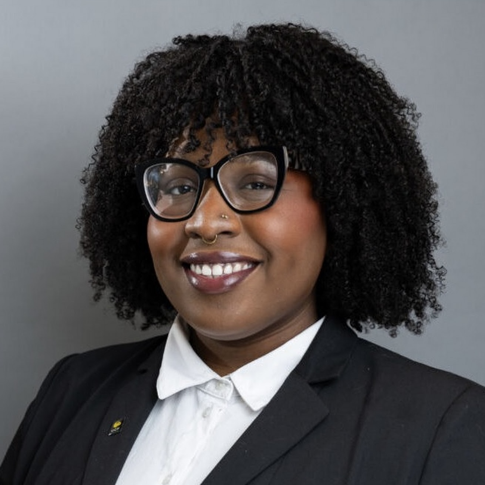

Order of Pegasus
University of Central Florida · 2026
About
they/them/él
I’m a Jamaican-born undergraduate sociologist at the University of Central Florida. My route here took me through healthcare, community college, and speech-language pathology before I found the field that fit the questions I was asking.

From speech-language pathology to sociology
I went into college thinking I would become an SLP. Somewhere along the way, I became more interested in who gets labeled, who gets services, and who made the rules in the first place.
I grew up between Kingston, New Jersey, and Florida. Before college, I worked in service jobs and healthcare, where I helped uninsured patients navigate referrals, medication access, and follow-up care. That work made questions about access and institutional responsibility tangible to me.
When I entered college, I planned to become a school-based speech-language pathologist working with Black and Latino children from low-resource communities. I wanted to help children obtain support, and I began studying the systems through which that support is provided.
Learning about special education made me question definitions I had initially taken for granted. Who decides what counts as a communication disorder, and whose language provides the standard? Why are some students identified for services while others are overlooked? I became interested in how professional knowledge, school rules, race, and class shape those decisions, which brought me to sociology.
Speech and language remain part of my research. In my Florida study, I examine racial and ethnic patterns in two special-education categories that the state records separately. The project gives me a way to investigate how school systems classify students while being careful about what those records can reveal.
Black feminist thought, Critical Race Theory, Critical Disability Studies, and the social model of disability are central to how I think about this work. They help me question whose knowledge is treated as authoritative, how racism and ableism shape school experiences, and what disabled young people should be able to decide for themselves.
As my training develops, I want to study the history of disability definitions and work more closely with the young people whose lives are represented in school records. I’m interested in research that communities can use, with community members involved as compensated partners in deciding what to ask and how the work proceeds.
University of Central Florida · 2026
University of Central Florida · 2024–present
Johns Hopkins University · 2025
My route to sociology included a summer studying mice. The Lauer Lab taught me a great deal about research, even as my questions kept returning to people.Harvard Kennedy School · 2026
University of Central Florida · 2026
How I work
I’m still learning how to ask better questions and choose evidence that can answer them. In my current work, that means documenting decisions, checking alternative explanations, and being clear about uncertainty. It also means recognizing when a question requires a different kind of study.